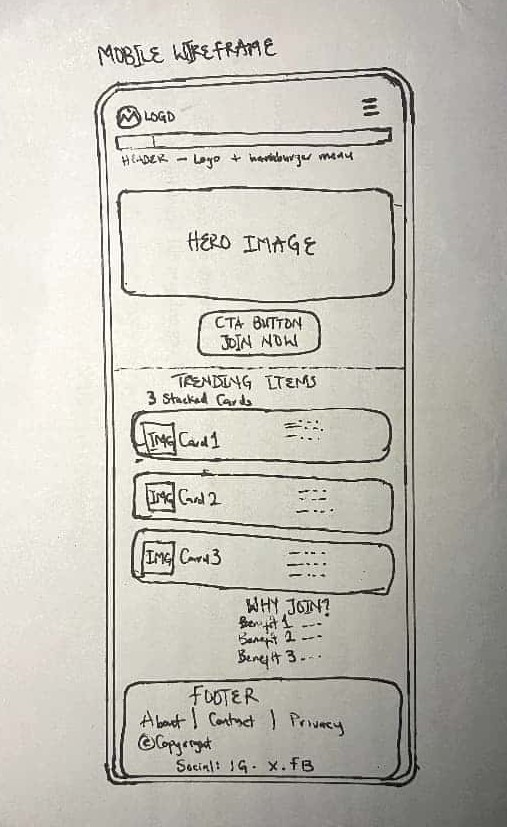
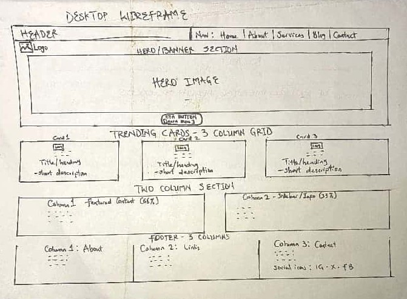

1. Site Name
Naija Pop Hub
Domain: naijapophub.com - Available
This name was selected because it is short, memorable, and combines "Naija" (Nigeria) with "Pop" culture. It represents both Nollywood movies and Afrobeats music discovery. It appeals to Gen Z / Millennials and the diaspora.
2. Site Purpose
The site provides a centralized discovery platform for Nigerian pop culture:
- Discover trending Nollywood movies and Afrobeats songs via live API (iTunes Search API).
- View detailed info in a modal dialog.
- Create a personal Watchlist that persists using localStorage.
- Submit a custom recommendation via a form (form-action.html).
- Attributions for data sources.
3. Scenarios
- "I want to find the latest Burna Boy and Ayra Starr songs with artwork and genre info quickly?"
- "Can I save movies I want to watch later and have them still there when I come back?"
- "What if I have a Nollywood movie that is not listed, can I add my own?"
4. Color Scheme
Palette inspired by Nigerian flag + vibrant pop culture:
#0D3B2E
#FDB913
#E63946
#FFF8E7
- Primary #0D3B2E: Header, footer, headings
- Secondary #FDB913: CTA buttons, active nav, accents
- Accent #E63946: Hover states, form required
- Background #FFF8E7: Body background
5. Typography
Montserrat (700): All headings - bold, modern
Poppins (400, 500): Body, nav, forms - readable on mobile
Montserrat Heading Example
Poppins body example - Nollywood to the world!
6. Wireframe
Mobile View (320px)
[Logo | Hamburger] - [Hero + CTA] - [3 Cards Stacked] - [Footer]

Desktop View (1024px)
[Logo | Horizontal Nav] - [Hero Full Width] - [3 Column Grid] - [Footer 3 Col]
